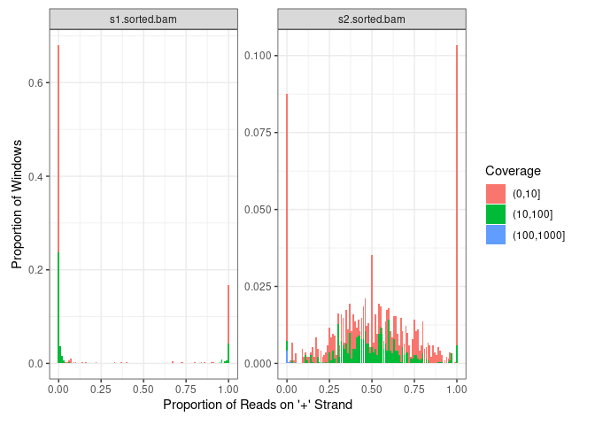
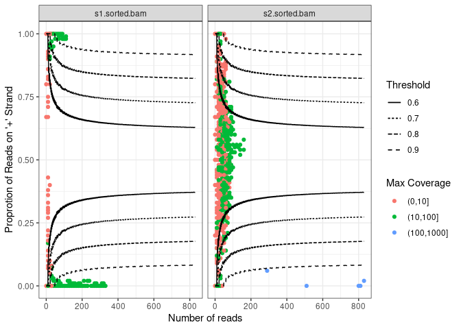
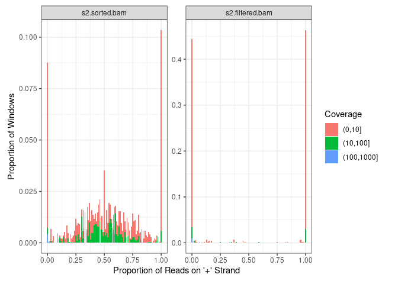

strandCheckR
This package aims to check the strandedness of reads in a bam file, enabling easy detection of any contaminating genomic DNA or other unexpected sources of contamination. It can be applied to quantify and remove reads which correspond to putative double strand DNA within a strand-specific RNA sample. The package uses a sliding window to scan a bam file and find the number of positive/negative reads in each window. It then provides method to plot the proportions of positive/negative stranded alignments within all windows, which allow users to determine how much the sample was contaminated, and to determine an appropriate threshold for filtering. Finally, users can filter putative DNA contamination from any strand-specific RNAseq sample using their selected threshold.
Installation
To install the release version from Bioconductor:
install.packages("BiocManager")
BiocManager::install("strandCheckR")To install the development version on github (i.e. this version):
install.packages("BiocManager")
BiocManager::install("UofABioinformaticsHub/strandCheckR")Quick Usage Guide
Following are the main functions of the package.
To get the number of +/- stranded reads of all sliding windows across a bam file:
# Load the package and example bam files
library(strandCheckR)
files <- system.file(
"extdata", c("s1.sorted.bam", "s2.sorted.bam"),
package = "strandCheckR"
)
# Find the read proportions from chromosome 10 for the two files
win <- getStrandFromBamFile(files, sequences = "10")
# Tidy up the file name for prettier output
win$File <- basename(as.character(win$File))
win
## DataFrame with 3078 rows and 10 columns
## Type Seq Start End NbPos NbNeg CovPos CovNeg MaxCoverage
## <Rle> <Rle> <numeric> <numeric> <Rle> <Rle> <Rle> <Rle> <Rle>
## 1 SE 10 7696701 7697700 0 17 0 393 17
## 2 SE 10 7696801 7697800 0 17 0 393 17
## 3 SE 10 7696901 7697900 0 17 0 393 17
## 4 SE 10 7697001 7698000 0 17 0 393 17
## 5 SE 10 7697101 7698100 0 17 0 393 17
## ... ... ... ... ... ... ... ... ... ...
## 3074 SE 10 7398501 7399500 46 34 2241 1668 13
## 3075 SE 10 7398601 7399600 46 34 2241 1668 13
## 3076 SE 10 7398701 7399700 41 32 2046 1568 13
## 3077 SE 10 7398801 7399800 48 31 2500 1681 25
## 3078 SE 10 7398901 7399900 52 35 2581 1728 25
## File
## <character>
## 1 s1.sorted.bam
## 2 s1.sorted.bam
## 3 s1.sorted.bam
## 4 s1.sorted.bam
## 5 s1.sorted.bam
## ... ...
## 3074 s2.sorted.bam
## 3075 s2.sorted.bam
## 3076 s2.sorted.bam
## 3077 s2.sorted.bam
## 3078 s2.sorted.bamThe histogram plot shows you the proportion of +/- stranded reads across all windows.
plotHist(
windows = win,
groupBy = "File",
normalizeBy = "File",
scales = "free_y"
)
In this example, s2.sorted.bam seems to be contaminated with double stranded DNA, as evidenced by many windows containing a roughly equal proportion of reads on both strands, whilst s1.sorted.bam is cleaner.
The output from plotWin() represents each window as a point. This plot also has threshold lines which can be used to provide guidance as to the best threshold to choose when filtering windows. Given a suitable threshold, reads from a positive (resp. negative) window are kept if and only if the proportion is above (resp. below) the corresponding threshold line.
plotWin(win, groupBy = "File")
The function filterDNA() removes potential double stranded DNA from a bam file using a selected threshold.
win2 <- filterDNA(
file = files[2],
destination = "s2.filtered.bam",
sequences = "10",
threshold = 0.7,
getWin = TRUE
)Comparing the histogram plot of the file before and after filtering shows that reads from the windows with roughly equal proportions of +/- stranded reads have been removed.
win2$File <- basename(as.character(win2$File))
win2$File <- factor(win2$File, levels = c("s2.sorted.bam", "s2.filtered.bam"))
library(ggplot2)
plotHist(win2, groupBy = "File", normalizeBy = "File", scales = "free_y") 
A more comprehensive vignette is available at https://bioconductor.org/packages/release/bioc/vignettes/strandCheckR/inst/doc/strandCheckR.html
Support
We recommend that questions seeking support in using the software are posted to the Bioconductor support forum - https://support.bioconductor.org/ - where they will attract not only our attention but that of the wider Bioconductor community.
Code contributions, bug reports and feature requests are most welcome. Please make any pull requests against the master branch at https://github.com/UofABioinformaticsHub/strandCheckR and file issues at https://github.com/UofABioinformaticsHub/strandCheckR/issues
Author Contributions
- Thu-Hien To authored the vast majority of code within the package along with unit tests
- Thu-Hien To and Stevie Pederson worked closely together on the package design and methodology
License
strandCheckR is licensed under GPL >= 2.0
Session Info
## R version 4.4.0 (2024-04-24)
## Platform: x86_64-pc-linux-gnu
## Running under: Ubuntu 20.04.6 LTS
##
## Matrix products: default
## BLAS: /usr/lib/x86_64-linux-gnu/openblas-pthread/libblas.so.3
## LAPACK: /usr/lib/x86_64-linux-gnu/openblas-pthread/liblapack.so.3; LAPACK version 3.9.0
##
## locale:
## [1] LC_CTYPE=en_AU.UTF-8 LC_NUMERIC=C
## [3] LC_TIME=en_AU.UTF-8 LC_COLLATE=en_AU.UTF-8
## [5] LC_MONETARY=en_AU.UTF-8 LC_MESSAGES=en_AU.UTF-8
## [7] LC_PAPER=en_AU.UTF-8 LC_NAME=C
## [9] LC_ADDRESS=C LC_TELEPHONE=C
## [11] LC_MEASUREMENT=en_AU.UTF-8 LC_IDENTIFICATION=C
##
## time zone: Australia/Adelaide
## tzcode source: system (glibc)
##
## attached base packages:
## [1] stats4 stats graphics grDevices utils datasets methods
## [8] base
##
## other attached packages:
## [1] strandCheckR_1.25.1 Rsamtools_2.22.0 Biostrings_2.74.1
## [4] XVector_0.46.0 GenomicRanges_1.58.0 GenomeInfoDb_1.42.1
## [7] IRanges_2.40.1 S4Vectors_0.44.0 BiocGenerics_0.52.0
## [10] ggplot2_3.5.1
##
## loaded via a namespace (and not attached):
## [1] tidyselect_1.2.1
## [2] dplyr_1.1.4
## [3] farver_2.1.2
## [4] blob_1.2.4
## [5] bitops_1.0-9
## [6] fastmap_1.2.0
## [7] RCurl_1.98-1.16
## [8] GenomicAlignments_1.42.0
## [9] XML_3.99-0.18
## [10] digest_0.6.37
## [11] lifecycle_1.0.4
## [12] KEGGREST_1.46.0
## [13] TxDb.Hsapiens.UCSC.hg38.knownGene_3.20.0
## [14] RSQLite_2.3.9
## [15] magrittr_2.0.3
## [16] compiler_4.4.0
## [17] rlang_1.1.4
## [18] tools_4.4.0
## [19] yaml_2.3.10
## [20] rtracklayer_1.66.0
## [21] knitr_1.49
## [22] S4Arrays_1.6.0
## [23] labeling_0.4.3
## [24] bit_4.5.0.1
## [25] curl_6.1.0
## [26] DelayedArray_0.32.0
## [27] plyr_1.8.9
## [28] abind_1.4-8
## [29] BiocParallel_1.40.0
## [30] withr_3.0.2
## [31] grid_4.4.0
## [32] colorspace_2.1-1
## [33] scales_1.3.0
## [34] SummarizedExperiment_1.36.0
## [35] cli_3.6.3
## [36] rmarkdown_2.29
## [37] crayon_1.5.3
## [38] generics_0.1.3
## [39] rstudioapi_0.17.1
## [40] httr_1.4.7
## [41] reshape2_1.4.4
## [42] rjson_0.2.23
## [43] DBI_1.2.3
## [44] cachem_1.1.0
## [45] stringr_1.5.1
## [46] zlibbioc_1.52.0
## [47] parallel_4.4.0
## [48] AnnotationDbi_1.68.0
## [49] restfulr_0.0.15
## [50] matrixStats_1.5.0
## [51] vctrs_0.6.5
## [52] Matrix_1.7-1
## [53] jsonlite_1.8.9
## [54] bit64_4.5.2
## [55] GenomicFeatures_1.58.0
## [56] glue_1.8.0
## [57] codetools_0.2-20
## [58] stringi_1.8.4
## [59] gtable_0.3.6
## [60] BiocIO_1.16.0
## [61] UCSC.utils_1.2.0
## [62] munsell_0.5.1
## [63] tibble_3.2.1
## [64] pillar_1.10.1
## [65] htmltools_0.5.8.1
## [66] GenomeInfoDbData_1.2.13
## [67] R6_2.5.1
## [68] evaluate_1.0.3
## [69] Biobase_2.66.0
## [70] lattice_0.22-6
## [71] png_0.1-8
## [72] memoise_2.0.1
## [73] Rcpp_1.0.13-1
## [74] gridExtra_2.3
## [75] SparseArray_1.6.0
## [76] xfun_0.50
## [77] MatrixGenerics_1.18.0
## [78] pkgconfig_2.0.3